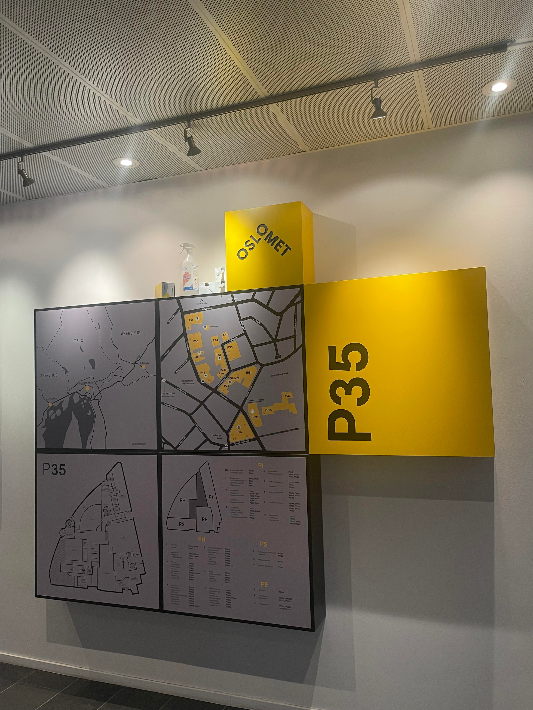
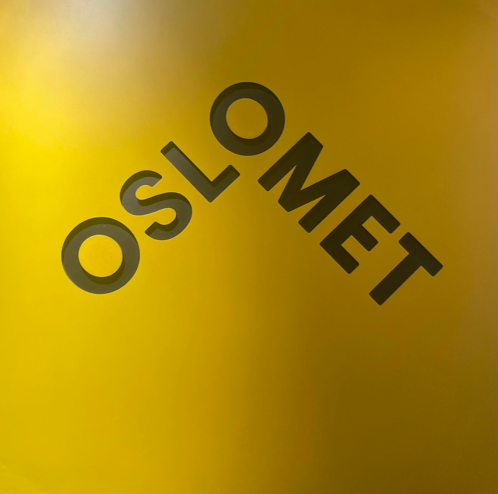

Refleksjonsessay
I våre tidligere år, og klasser, ble vi alltid fortalt om hvordan videregående skole er
mye bedre enn høyere klasser. Ikke bare for en grunn som mangel på sosialisering, men også
på faglig basis. Det er nå vi kan meget godt forstå selve forskjellen på å være en elev og
en student. Som elev har du hatt fag i klasserom med lærere. I høyere klasser, som Oslomet
Storbyuniversitet, har vi nå mistet vanen hvor man møter opp til en planlagt tidsplan.
Det er ikke flere lærere som henger over ryggen og maser til oss hele tiden om å fullføre
oppgavene våre. Ikke noe mer av timer som starter og slutter, friminutt, og godteri i timene.
Hva om det er noe vi trenger? Er avhengige av? Hva om vi ikke kan klare oss uten det?
Alt tenkt og diskutert og det nærmer seg offisielt eksamensdatoer. Vi har strevet, jobbet
og skal klare oss gjennom alt. Det er ikke lengre lærere eller sine 30 andre klassekamerater
man vender seg til hjelp for. Det er 400 fremmede på Discord og TA’s som har sittet akkurat
der vi sitter nå, som skal besvare våre spørsmål, rette våre oppgaver, innleveringer og
konkludere om vi er verdige motstandere som kan meldes opp til eksamen. Uten dem hadde vi
ikke vært der vi er nå engang. Nå møter man opp til hvilke som helst timer man vil, leser
når man vil, og drar hjem når man vil. Det er ingen pekepinner på hva som er rett og galt.
Det er bare frustrasjon og streving.
Hva med selve læringen og faget? I programmering, som
jevnt fra starten har vært vanskeligste faget, er det lagt ut såkalt moduler hvor vi lærer
oss selv det som er der, og møter opp til en 45 min økt og ser på oppgaveløsing. Når vi sier
at vi er meget takknemlige for det kan vi for sikkert si at vi snakker på vegne av alle andre
studenter med programmering. Dersom man ser bort fra det er det som sjokkerte oss mest at mye
av skolegangen foregår på engelsk! Hvem skulle ha visst at studie kan være så kreativt? Tenk på
å ha norske forelesninger i matte, ukesoppgaver på engelsk, også plutselig en eksamen på norsk.
Man venner seg sakte, men sikkert til det, ikke at det ble mye lettere, men det går tenkte vi.
Hvor er vi nå? Vi har funnet oss hyggelige personer å være i grupper med, og nye venner som vi
kan se for oss vare livet ut. Vi kommuniserer godt, hjelper hverandre og kommer godt overens.
Ikke alt kan bare være dårlig. Leter man, så finnes det gode positive ting overalt.
TA’s-ene er kjempe hyggelige og deler ut gode råd hele tiden. De er veldig lett tilgjengelige,
noe som er veldig beroligende. Skolen er stor, fin, og det er gode muligheter for å jobbe i
helgene også. Det er godt med butikker rundt i Pilestredet, noe som gjør det mulig å finne alt.
Kollektivet er godt rundt omkring og det er sørget for nok ressurser til å finne seg fram hvor
som helst.

